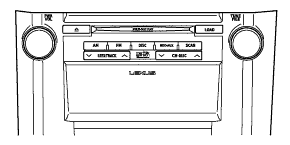

AUDIO AND VISUAL SYSTEM > GENERAL |
| OUTLINE |
Audio Head Unit
2 types of navigation receiver assemblies are available for the radio receiver assembly.
The radio receiver assembly has been made Digital Audio Broadcast (DAB) ready through the addition of an accessory external tuner.
A sound library function that can compress music sound data using Advanced Audio Coding (AAC) compression technology and record the data to the Hard Disk Drive (HDD) is used.
The speaker systems are available with 9 speakers and 17 speakers respectively.
Rear Seat Entertainment System (RSE)
The RSE displays images from the DVD player or an auxiliary player on the television display assemblies. The RSE also outputs sound via the speakers or headphones.
Television display assemblies are provided on the back of the driver and front passenger seats, enabling each rear seat occupant to view the television image while looking straight forward.
"Bluetooth" Audio System
The Bluetooth audio system enables the users to listen to the music stored in a Bluetooth-compliant portable audio device (Bluetooth audio player) through a Bluetooth connection.
The Bluetooth audio system can operate a Bluetooth audio player through the audio head unit.
"Bluetooth" Hands-free System
The Bluetooth hands-free system enables drivers to place or receive phone calls using a cellular phone without releasing their hands from the steering wheel.
For safety, some functions of the Bluetooth hands-free system may not be selectable while the vehicle is being driven.
| "Bluetooth" is a trademark owned by Bluetooth SIG, Inc. |
Stereo Jack Adapter Assembly
A stereo jack adapter assembly is used by the audio system as an input terminal for portable audio devices.
A USB port is provided to enable operation of a portable audio player (USB type).
USB Audio System
By connecting a portable audio player (USB type) to the USB port located in the stereo jack adapter assembly, audio stored on the portable audio player can be played back by operating the radio receiver assembly or display and navigation module display.
Steering Pad Switch
Steering pad switches that support the respective equipment are available.
| SPECIFICATION |
Audio Head Unit
Models for Europe
| Audio Head Unit | Design | Specification |
| Radio Receiver Assembly |
| |
| HDD Navigation Receiver Assembly |
|
Models for G.C.C. Countries
| Audio Head Unit | Design | Specification |
| Radio Receiver Assembly |
| |
| DVD Navigation Receiver Assembly |
|
Models for China
| Audio Head Unit | Design | Specification |
| Radio Receiver Assembly |
| |
| HDD Navigation Receiver Assembly |  |
|
9-speaker System
| Location | Speaker Type | Caliber | Impedance | Input Range |
| *1 | Front Tweeter x 2 | 25 mm (1.0 in.) | 4 Ω | 25 W |
| *2 | Woofer x 2 | 152 mm (6.0 in.) x 229 mm (9.0 in.) | 4 Ω | 21 W |
| *3 | Rear Speaker x 2 | 160 mm (6.3 in.) | 4 Ω | 21 W |
| *4 | Center Speaker | 65 mm (2.6 in.) | 6 Ω | 15 W |
| *5 | Front Mid Range Speaker x 2 | 65 mm (2.6 in.) | 4 Ω | 21 W |
17-speaker System
| Location | Speaker Type | Caliber | Impedance | Input Range |
| *1 | Front Tweeter x 2 | 25 mm (1.0 in.) | 6.15 Ω | 20 W |
| *2 | Woofer x 2 | 152 mm (6.0 in.) x 229 mm (9.0 in.) | 6 Ω | 40 W |
| *3 | Rear Speaker x 2 | 160 mm (6.3 in.) | 6 Ω | 25 W |
| *4 | Center Speaker and Tweeter | 90 mm (3.5 in.) | 6 Ω | 15 W |
| *5 | Front Mid Range Speaker x 2 | 90 mm (3.5 in.) | 6 Ω | 15 W |
| *6 | Rear Tweeter x 2 | 25 mm (1.0 in.) | 6.15 Ω | 20 W |
| *7 | Surround Speaker and Tweeter x 2 | 90 mm (3.5 in.) | 6 Ω | 15 W |
| *8 | Sub Woofer | 250 mm (9.8 in.) | 8 Ω | 40.5 W |
Bluetooth Hands-free System
| Function | Without Navigation System | With Navigation System | ||
| Call with Bluetooth Phone | By Dial | ● | ● | |
| By Phonebook | ● (20 Cases) | ● (1000 Cases) | ||
| By Call History | Dialed Number | ● (5 Cases) | ● (10 Cases) | |
| Received Call | ● (5 Cases) | ● (10 Cases) | ||
| Missed Call | - | ● (10 Cases) | ||
| All Call History | - | ● | ||
| By Speed Dial | ● (6 Cases) | ● (18 Cases) | ||
| By Voice Recognition | Dialing by Name | ● | ● | |
| Dialing by Phone Number | - | ● | ||
| Dialing by Call History | - | ●*2 | ||
| By Point Of Interest (POI) Call | - | ● | ||
| Receiver with Bluetooth Phone/Talk on Bluetooth Phone | Receiving Call*1 | Received Manually | ● | ● |
| Received Refusal | ● | ● | ||
| Interrupt Call*1 | - | ● | ||
| Tone Sending | By Dial | - | ● | |
| By Registered Number | - | ● | ||
| Recognition/Connection | Registering Bluetooth Phone | ● (6 Bluetooth Phones) | ● (4 Bluetooth Phones) | |
| Connecting Bluetooth Phone | Connected Automatically | ● | ● | |
| Connected Manually | ● | ● | ||
| Setting | Setting Automatic Connection | - | ● | |
| MAIN FEATURES |
HDD Navigation Receiver Assembly (Models for Europe)
A sound library function is used. This function stores the music of the CD that is inserted in the CD player onto the HDD. Data for the stored music, such as the album title and artist name, can be acquired from the "gracenote CD DataBase (CDDB)". Moreover, the album title and artist name can be edited by the user.
| "gracenote" and "CDDB" are a trademark owned by gracenote. |
A function that automatically updates the FM station list to be used.
Rear Seat Entertainment System (RSE)
A 7.0-inch Video Graphics Array (VGA) monitor is used for the television system. In addition, Light Emitting Diodes (LEDs) are used to provide mercury-free backlighting. This reduces the burden on the environment and ensures brightness.
Selected DVD and VIDEO buttons are provided separately on the remote controller, thus enhancing usability.
A menu screen exclusive to the rear seat entertainment system is provided, thus enhancing operability of each content selection.
| *1 | Television Display Assembly | *2 | Remote Controller |